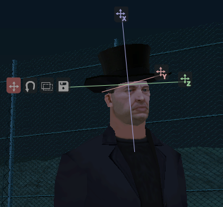

EditAttachedObject FR
From SA-MP Wiki
Page d'Accueil | Les Fonctions | Les Callbacks | Les bases du Scripting | Plugins de Serveur | Tutoriaux
Ne prenez pas en compte les FR dans les noms
Description:
Entre dans le mode d'édition pour un objet attaché.
| Cette fonction a été ajoutée dans SA-MP 0.3e et ne marchera pas dans les versions antérieures! |
(playerid, index)
| playerid | L'ID du joueur qui doit entrer en mode d'édition |
| index | L'index (slot) de l'objet à éditer |
Retourne:
1 en cas de succès et 0 en cas d'échec.
public OnPlayerSpawn(playerid) { SetPlayerAttachedObject(playerid, 0, 1337, 2); // Le slot 0 est utilisé } public OnPlayerCommandText(playerid, cmdtext[]) { if(!strcmp(cmdtext, "/editao", true)) { EditAttachedObject(playerid, 0); // On édite le slot 0 SendClientMessage(playerid, 0xFFFFFFFF, "SERVEUR: Vous éditez maintenant l'objet sur votre slot 0 !"); return 1; } return 0; }
.
Note | Vous pouvez bouger la caméra pendant l'édition en appuyant et en maintenant la barre d'espace (ou Z dans un véhicule) et en bougeant votre souris. |
Il y a 7 boutons cliquables dans le mode d'édition.
Les trois seules icones qui ont X/Y/Z sur elles peuvent être glissées pour éditer la position/rotation/échelle.
Les quatre boutons sur une rangée servent à sélectionner le mode d'édition et à sauvegarder l'édition : [Déplacer] [Tourner] [Échelonner] [Sauvegarder].
Cliquer le bouton de sauvegarde va appeler OnPlayerEditAttachedObject.
Important | Les joueurs seront capables d'échelonner un objet à une très grande valeur ou à une valeur négative. Les limites doivent être mises en place en utilisant OnPlayerEditAttachedObject en arrêtant l'édition. |
[edit]
Fonctions Relatives
Les fonctions suivantes peuvent être utiles car elles sont indirectement ou directement liées a cette fonction.
- SetPlayerAttachedObject: Attache un objet à un joueur.
- RemovePlayerAttachedObject: Supprime l'objet d'un joueur.
- IsPlayerAttachedObjectSlotUsed: Vérifie si un objet est attaché à un joueur sur un slot spécifié
- EditObject: Fait entrer un joueur en mode d'édition pour un objet.
- EditPlayerObject: Fait entrer un joueur en mode d'édition d'objet de joueur
- SelectObject: Sélectionne un objet.
- CancelEdit: Arrête le mode d'édition d'objet pour un joueur.
[edit]
Callbacks Relatives
Les Callbacks suivantes peuvent être utiles car elles sont indirectement ou directement liées a cette fonction.
- OnPlayerEditAttachedObject: Appelée lorsqu'un joueur fini d'éditer un objet attaché.

{kind=link}